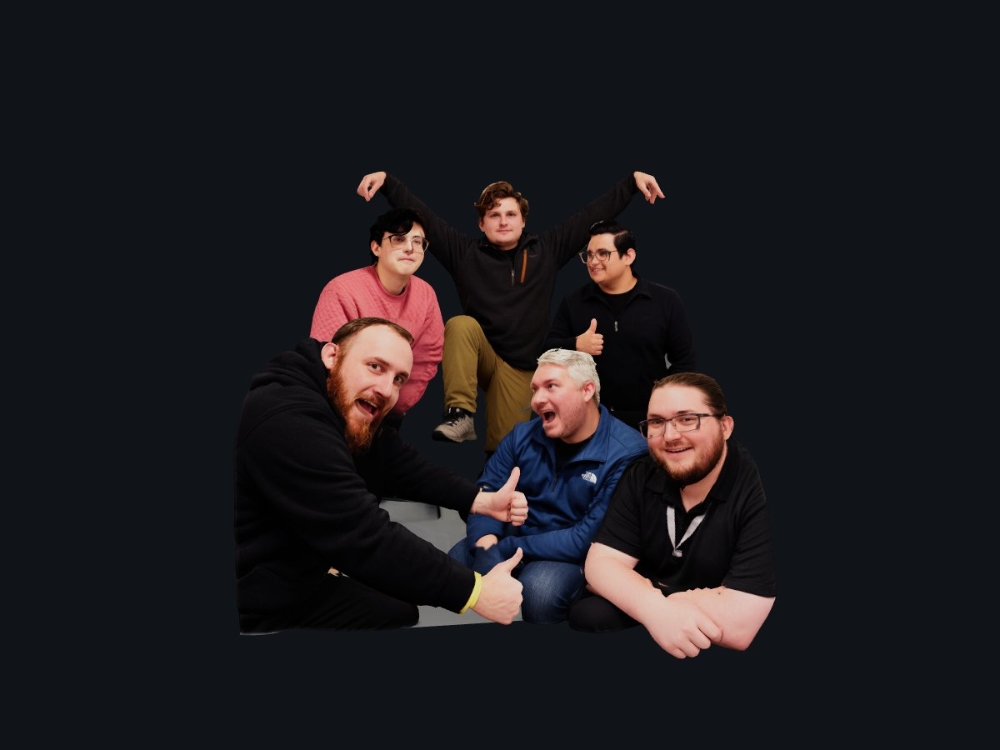

3D is turned off in this browser, so here is a still picture instead. To see it in 3D: in Chrome, turn on Settings → System → "Use graphics acceleration when available" and restart Chrome, or open this page in Safari.